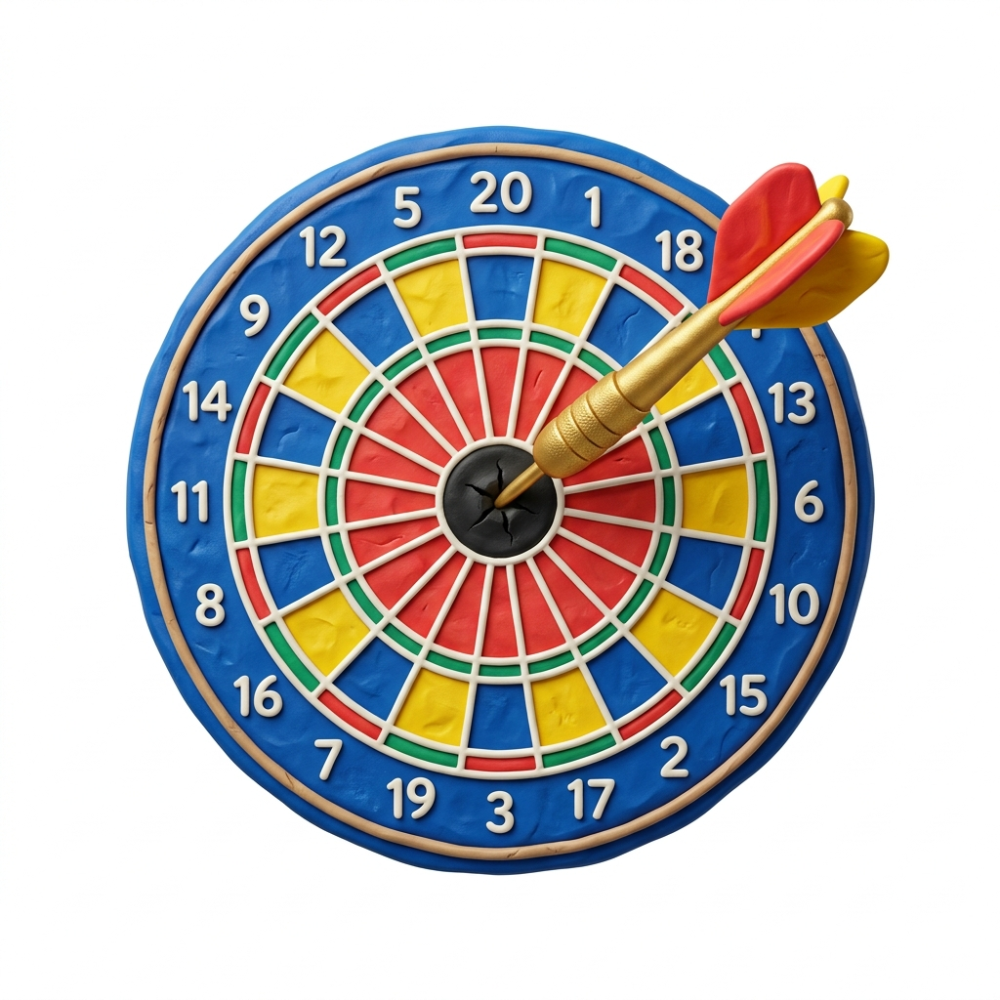
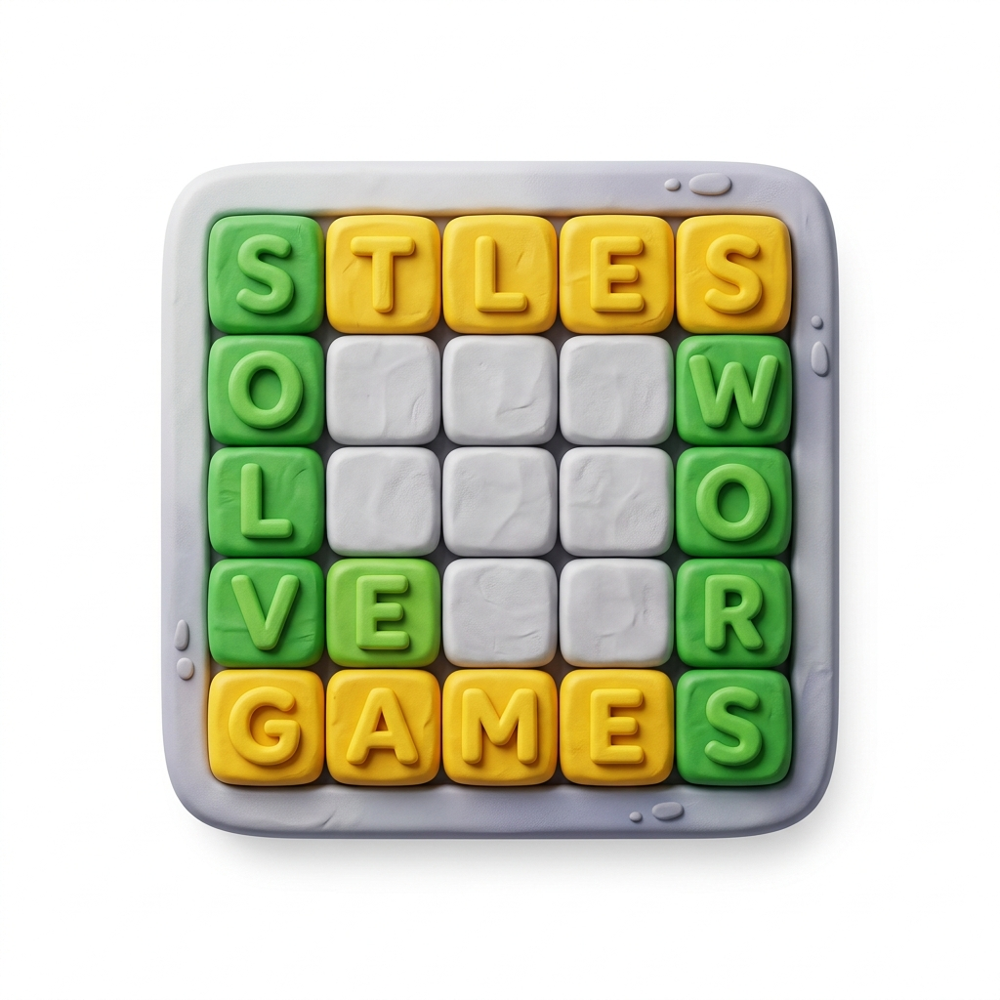

اگر آپ کسی مشکل پہیلی پر پھنس گئے ہیں، تو فوری طور پر ممکنہ جوابات تلاش کرنے کے لیے ہمارا مفت ورڈل سالور استعمال کریں۔ اپنے معلوم حروف درج کریں اور سیکنڈوں میں زبردست تجاویز حاصل کریں۔
ورڈل سالور کھولیںاگر دن میں ایک پہیلی آپ کے لیے کبھی کافی نہیں رہی، تو آپ صحیح جگہ پر آئے ہیں۔ ورڈل انلمیٹڈ 24 گھنٹے کی دیوار کو ہٹا دیتا ہے اور آپ کو اپنی مرضی کے مطابق پانچ حرفی الفاظ کی پہیلیاں حل کرنے کی اجازت دیتا ہے، بالکل مفت اور ان بلاکڈ، جس کے لیے کسی اکاؤنٹ کی ضرورت نہیں ہے۔ چاہے آپ اسے روزانہ کی ذہنی ورزش کے طور پر لیں یا رات گئے الفاظ کے چیلنج کے طور پر، جب آپ تیار ہوں تو گیم ہمیشہ تیار رہتی ہے۔
اس پلیٹ فارم کو انہی بنیادی اصولوں پر بنایا گیا ہے جنہیں آپ پہلے سے جانتے ہیں، یہ اصل ورڈ گیم کی اطمینان بخش منطق کو تیز تر، زیادہ لچکدار تجربے کے ساتھ جوڑتا ہے۔ انٹرفیس کسی بھی ڈیوائس پر فوری طور پر لوڈ ہوجاتا ہے، ڈیزائن آپ کے راستے میں نہیں آتا، اور ایک نئی پہیلی ہمیشہ صرف ایک تھپتھپانے کی دوری پر ہوتی ہے۔ آدھی رات کو ری سیٹ ہونے کا کوئی انتظار نہیں۔
اصل گیم نے ایک اچھی وجہ سے عالمی سطح پر لفظی پہیلی کا جنون پیدا کیا: اصول صاف ہیں، چیلنج حقیقی ہے، اور تین اندازوں میں جواب تلاش کرنے کا اطمینان واقعی نشہ آور ہے۔ واحد مایوسی ہمیشہ روزانہ کی حد تھی۔ یہ پلیٹ فارم خاص طور پر اس مسئلے کو حل کرنے کے لیے بنایا گیا تھا۔
یہاں آپ ایک راؤنڈ ختم کرتے ہی نئے راؤنڈ میں شامل ہو سکتے ہیں۔ حسب ضرورت بصری تھیمز، ہموار اینیمیشنز، اور ریسپانسیو موبائل کنٹرولز تجربے کو صرف جوڑ توڑ کے بجائے شاندار بناتے ہیں۔ یہ وہی پیارا پہیلی فارمیٹ ہے، جس میں صوابدیدی پابندیاں نہیں ہیں۔
یہ ورژن مکمل طور پر انگریزی گیم پلے کے تجربے پر مرکوز ہے۔ اگر آپ بغیر کسی خلفشار اور بغیر کسی پے وال کے انگریزی میں ورڈل کھیلنا چاہتے ہیں، تو یہ آپ کا ہوم بیس ہے۔
پلیٹ فارم کو پہلی بار کھیلنے والوں سے لے کر تجربہ کار ورڈ گیم کے ماہرین تک سب کے لیے ڈیزائن کیا گیا ہے۔ ابتدائی افراد کو واضح رنگین فیڈ بیک کے ساتھ ایک معاف کرنے والا، صاف ستھرا انٹرفیس ملتا ہے۔ سرشار کھلاڑیوں کو ہارڈ موڈ، تفصیلی اعدادوشمار، اور ایک ہی سیشن میں درجنوں پہیلیاں حل کرنے کی صلاحیت ملتی ہے۔ لائیو گیم ٹائمر آپ کے تیز ترین حل کو بھی ٹریک کرتا ہے تاکہ آپ خود سے مقابلہ کر سکیں۔
مقصد سیدھا ہے: چھ اندازوں کے اندر چھپے ہوئے پانچ حرفی انگریزی لفظ کی شناخت کریں۔ ہر اندازہ ایک درست لفظ ہونا چاہیے۔ ہر جمع کرانے کے بعد، ٹائلیں رنگ بدلتی ہیں تاکہ یہ ظاہر ہو سکے کہ آپ کا اندازہ کتنا درست تھا:
سبز: حرف درست ہے اور بالکل اسی جگہ پر ہے جہاں اسے ہونا چاہیے۔
پیلا: حرف ہدف کے لفظ میں ظاہر ہوتا ہے لیکن مختلف پوزیشن پر ہوتا ہے۔
سرمئی: حرف چھپے ہوئے لفظ میں بالکل موجود نہیں ہے۔
اس تاثرات کو درست طریقے سے پڑھنا اور ہر آنے والے اندازے کو ایڈجسٹ کرنا ہی پورا کھیل ہے۔ یہ آسان لگتا ہے۔ اس میں مہارت حاصل کرنا بالکل مختلف معاملہ ہے۔
معیاری موڈ کے علاوہ، ہارڈ موڈ آپ کو اپنے اگلے اندازے میں ہر تصدیق شدہ سراغ کو استعمال کرنے پر مجبور کرتا ہے۔ کسی سبز حرف کو صرف اس لیے نہ چھوڑیں کہ کوئی اور لفظ آسان لگتا ہے۔ یہ پابندی نظم و ضبط والے حل کرنے والوں کو خوش قسمت اندازہ لگانے والوں سے الگ کرتی ہے۔ ان کھلاڑیوں کے لیے ملٹی ورڈ موڈ بھی ہے جو ایک ہی وقت میں کئی پہیلیاں حل کرنا چاہتے ہیں اور حقیقی دباؤ میں اپنی ملٹی ٹاسکنگ کی صلاحیت کو آزمانا چاہتے ہیں۔
بنیادی پہیلی کی منطق دونوں ورژنز میں ایک جیسی ہے۔ باقی سب کچھ مختلف ہے۔
| خصوصیت | روزانہ ورڈل (آفیشل NYT) | لامحدود موڈ |
|---|---|---|
| دستیاب پہیلیاں | روزانہ ایک | لامحدود، طلب پر |
| اندازے کی حد | 6 پر مقرر | حسب ضرورت |
| مشکل کے اختیارات | صرف معیاری | معیاری کے ساتھ ہارڈ موڈ |
| قیمت | مفت | 100% مفت |
| بصری تھیمز | صرف لائٹ اور ڈارک | سائبر نیون، ریٹرو، اوشین، اور مزید |
| ٹائم ٹریکنگ | دستیاب نہیں | لائیو ٹائمر اور تیز ترین جیت کا ریکارڈ |
| اکاؤنٹ کی ضرورت | اکاؤنٹ درکار ہے | فوری پلے، کوئی لاگ ان نہیں |
ایک عملی مشورہ جو جاننے کے قابل ہے: ہمارا روزانہ کا چیلنج ہر روز سرکاری NYT ورڈل جیسا ہی جواب استعمال کرتا ہے۔ اس کا مطلب ہے کہ آپ اسے پہلے یہاں کھیل سکتے ہیں، بغیر کسی دباؤ کے اپنی رفتار سے لفظ تلاش کر سکتے ہیں، اور پھر NYT ورژن پر پہلے سے ہی جواب جانتے ہوئے جا سکتے ہیں۔ ایک مشکل پہیلی کے دن اپنے سلسلے کو برقرار رکھنے کا یہ ایک جائز طریقہ ہے۔
روزانہ مشترکہ پہیلی کے علاوہ، لامحدود موڈ حقیقی مہارت پیدا کرنے کے لیے ایک بہتر آپشن ہے، کیونکہ بہت سے راؤنڈز میں مسلسل دہرانا ہی بہتری کا واحد قابل اعتماد طریقہ ہے۔
قسمت آپ کو کبھی کبھار کسی پہیلی میں کامیاب کر سکتی ہے، لیکن ایک قابل تکرار حکمت عملی وہ ہے جو آپ کی جیت کے سلسلے کو زندہ رکھتی ہے۔ یہ تکنیکیں اردو حروف کی فریکوئنسی اور لفظی ساخت پر مبنی ہیں، نہ کہ قیاس آرائی پر۔

ماہرینِ لسانیات اور پہیلیوں کے ماہرین نے اردو ورڈل کے لیے بہترین ابتدائی الفاظ تجویز کیے ہیں۔ یہ الفاظ عام اردو حروف پر مشتمل ہیں جو آپ کو پہلے ہی مرحلے میں زیادہ سے زیادہ حروف کی درست پوزیشن معلوم کرنے میں مدد دیتے ہیں۔
اردو میں مصوتوں (یا حروفِ علت) جیسے الف (ا)، واؤ (و)، چھوٹی یے (ی) اور بڑی یے (ے) کا کردار بہت اہم ہوتا ہے۔ اپنے پہلے دو اندازوں میں ان حروف کو نشانہ بنا کر آپ لفظ کے بنیادی ڈھانچے کو آسانی سے سمجھ سکتے۔

اردو الفاظ میں کچھ مخصوص لاحقے (suffixes) اور سابقے (prefixes) بار بار دہرائے جاتے ہیں۔ جیسے الفاظ کے آخر میں ستان، وار، یا جمع کے لیے وں یا یں آنا۔ ان پیٹرنز کو پہچان کر آپ درست لفظ تک بہت تیزی سے پہنچ سکتے ہیں۔
یہ فرض نہ کریں کہ لفظ میں ہر حرف صرف ایک ہی بار آئے گا۔ اردو کے کئی الفاظ میں ایک ہی حرف دو بار بھی آ سکتا ہے، خاص طور پر سابقوں یا لاحقوں کے ملاپ سے بننے والے الفاظ میں۔ اگر آپ کے پاس چند درست حروف ہوں اور لفظ نہ بن رہا ہو، تو کسی حرف کو دہرانے کی کوشش کریں۔
ہر پہیلی سیشن کو عقل کی اکیلی جنگ ہونے کی ضرورت نہیں ہے۔ اس پلیٹ فارم میں ایک بلٹ ان ورڈل سالور شامل ہے جو ایک سادہ سپوئلر کے بجائے حقیقی سوچنے والے معاون کے طور پر کام کرتا ہے۔ وہ حروف درج کریں جو آپ پہلے سے جانتے ہیں، نشان زد کریں کہ کون سی پوزیشن سبز تصدیق شدہ ہیں اور کون سی پیلی مس ہیں، اور سالور درست اردو الفاظ کی ایک فلٹر شدہ فہرست واپس کرتا ہے جو آپ کے موجودہ سراغوں سے میل کھاتی ہے۔ یہ صرف آپ کو جواب نہیں دیتا۔ یہ آپ کو مضبوط ترین امیدوار دیتا ہے تاکہ حتمی فیصلہ آپ کا ہی رہے۔
سالور خاص طور پر ہارڈ موڈ رنز کے لیے مفید ہے جہاں پانچویں اندازے پر ایک غلط اقدام آپ کو پورا گیم ہروا سکتا ہے۔ جمع کرانے سے پہلے اپنی استدلال کی دوبارہ جانچ کے لیے اس کا استعمال ایک جائز حکمت عملی ہے، کوئی شارٹ کٹ نہیں۔ سالور متعدد زبانوں کی بھی حمایت کرتا ہے، جس سے یہ انگریزی کھیل کے علاوہ بھی کارآمد ہو جاتا ہے۔
سالور کے ساتھ ساتھ، سائٹ میں ایک سرشار ورڈل اشارے کا سیکشن ہے جو تقریباً خود ایک ثانوی گیم کی طرح کام کرتا ہے۔ آپ روزانہ کی پہیلی کے اندراجات کو براؤز کر سکتے ہیں، مطالعہ کر سکتے ہیں کہ مخصوص الفاظ کا اشارہ کیسے دیا گیا، اور ابتدائی اندازے سے حل تک منطقی راستہ تلاش کر سکتے ہیں۔ یہ آپ کی پیٹرن کی شناخت کو تیز کرنے اور یہ سمجھنے کا ایک عملی طریقہ ہے کہ کچھ ابتدائی الفاظ مسلسل دوسروں سے بہتر کارکردگی کیوں دکھاتے ہیں۔ اسے ورڈل کمیونٹی کے لیے ٹریننگ لاگ کے طور پر سوچیں۔
آن لائن درجنوں ورڈل کے مختلف قسم موجود ہیں۔ زیادہ تر کلون ہیں جن میں اصل تجربے میں بہت کم سوچ بچار کی گئی ہے۔ اسے مختلف طریقے سے بنایا گیا تھا۔
چاہے آپ یہاں پانچ منٹ کے دماغی ری سیٹ کے لیے آئے ہوں یا دو گھنٹے کے فوکسڈ پریکٹس سیشن کے لیے، پلیٹ فارم بہترین کام کرتا ہے۔ ورڈل انلمیٹڈ ان بلاکڈ فارمیٹ خاص طور پر اس لیے موجود ہے کیونکہ بامعنی ذخیرہ الفاظ کی بہتری کے لیے حجم کی ضرورت ہوتی ہے، اور روزانہ ایک پہیلی کافی حجم نہیں ہے۔
یہ صفحہ انگریزی ورڈل کے تجربے پر مرکوز ہے، لیکن پلیٹ فارم مجموعی طور پر 10 زبانوں کی حمایت کرتا ہے، ہر ایک کی اپنی سرشار الفاظ کی فہرست اور مکمل ورڈل سالور انضمام ہے۔ چاہے آپ اپنی مادری زبان میں کھیل رہے ہوں یا غیر ملکی زبان کی مشق کر رہے ہوں، وہی لامحدود گیم پلے اور سالور ٹولز ان سب پر دستیاب ہیں:
جی ہاں، مکمل طور پر۔ اس میں کوئی پوشیدہ فیس، کوئی پریمیم درجے، اور کوئی اکاؤنٹ کی ضروریات نہیں ہیں۔ صفحہ کھولیں اور فوراً کھیلنا شروع کریں۔
یہی تو پوری بات ہے۔ سرکاری NYT ورڈل کے برعکس، جو ہر 24 گھنٹے میں ایک بار ری سیٹ ہوتا ہے، یہ پلیٹ فارم آپ کی درخواست کرتے ہی ایک نئی پہیلی پیش کرتا ہے۔ دس راؤنڈ کھیلیں یا سو۔ اس کی کوئی حد نہیں ہے۔
انفینٹی موڈ بنیادی لامحدود تجربہ ہے: پانچ حرفی الفاظ کی پہیلیوں کی ایک نہ ختم ہونے والی قطار جس میں روزانہ کی کوئی حد نہیں ہے۔ ایک مکمل کریں، نیو گیم پر کلک کریں، اور جب تک آپ چاہیں جاری رکھیں۔
نہیں، سرکاری ورڈل، جو اب نیویارک ٹائمز کی ملکیت ہے، ایک مشترکہ روزانہ کی پہیلی پیش کرتا ہے۔ یہ پلیٹ فارم ایک آزاد گیم ہے جس کا اپنا ورڈ پول ہے اور مانگ پر کھیلنے کی آزادی ہے۔
جوش وارڈل، جو ایک ویلش سافٹ ویئر انجینئر ہیں، نے 2021 میں اپنے پارٹنر کے لیے ذاتی تحفے کے طور پر ورڈل بنایا تھا۔ یہ گیم چند مہینوں میں وائرل ہو گئی اور اسے 2022 کے اوائل میں نیویارک ٹائمز نے حاصل کر لیا تھا۔
بالکل۔ قواعد سیکھنے میں تقریباً تیس سیکنڈ لگتے ہیں۔ معیاری موڈ میں وقت کا کوئی دباؤ نہیں ہوتا اور رنگین فیڈ بیک قدرتی طور پر جواب کی طرف آپ کی رہنمائی کرتا ہے۔ نئے کھلاڑی عام طور پر تیزی سے بہتری لاتے ہیں، خاص طور پر دستیاب لامحدود پریکٹس راؤنڈز کے ساتھ۔
ایک ورڈل سالور ایک ایسا ٹول ہے جو آپ کے تصدیق شدہ حروف، ان کی پوزیشنز، اور ختم کیے گئے حروف کو لیتا ہے، اور پھر ان درست الفاظ کی فہرست واپس کرتا ہے جو اب بھی فٹ بیٹھتے ہیں۔ یہ آپ کے سب سے مضبوط اگلے اندازے کی شناخت کرنے میں مدد کرتا ہے جب اختیارات بہت زیادہ محسوس ہوں۔
نہیں، اشارے کا سیکشن آپ کی استدلال کی حمایت کرنے کے لیے ڈیزائن کیا گیا ہے، نہ کہ اس کی جگہ لینے۔ یہ ایسے سراغ اور پیٹرن پیش کرتا ہے جو چیلنج کو برقرار رکھتے ہوئے آپ کو امکانات پر زیادہ مؤثر طریقے سے سوچنے میں مدد کرتے ہیں۔
بیک اینڈ درست انگریزی کے پانچ حرفی الفاظ کے ایک منتخب پول سے قرعہ اندازی کرتا ہے اور انہیں اس طرح منتخب کرتا ہے جو لگاتار گیمز میں تنوع کو یقینی بناتا ہے۔ مقصد یہ ہے کہ ہر سیشن کو ایک ہی مختصر فہرست میں سائیکل چلانے کے بجائے واقعی تازہ رکھا جائے۔
جی ہاں۔ ہارڈ موڈ آپ کو اپنے اگلے اندازے میں ہر تصدیق شدہ سراغ کو شامل کرنے کی ضرورت پیش کرتا ہے، جو ان ایلیمینیشن اندازوں کو روکتا ہے جن پر معیاری موڈ انحصار کرتا ہے۔ یہ مضبوط ذخیرہ الفاظ اور نظم و ضبط کے ساتھ کٹوتی کی استدلال والے کھلاڑیوں کو انعام دیتا ہے۔